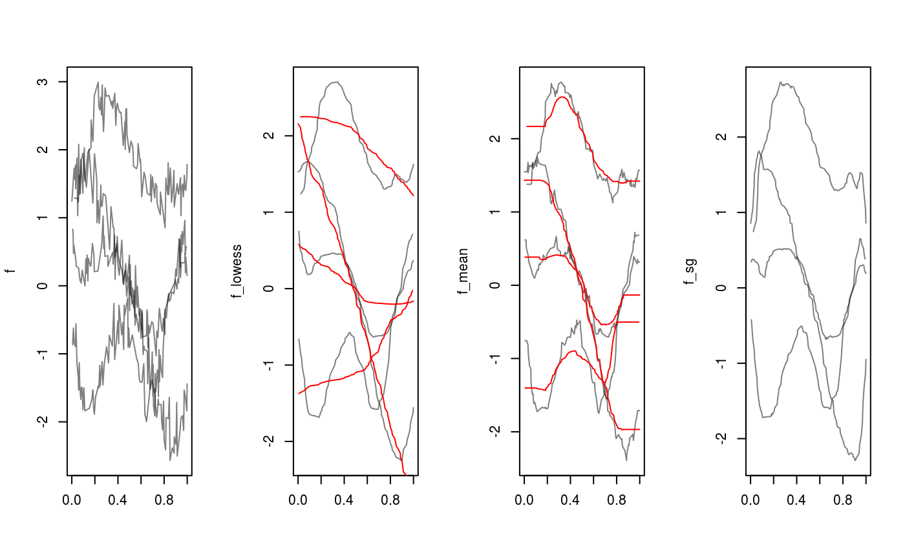

Apply running means or medians, lowess or Savitzky-Golay
filtering to smooth functional data. This does nothing for tfb-objects,
which should be smoothed by using a smaller basis / stronger penalty.
The stats::smooth() function is re-exported as the default method.
smooth(x, ...) # S3 method for tfb smooth(x, ...) # S3 method for tfd smooth(x, method = c("lowess", "rollmean", "rollmedian", "savgol"), ...) # S3 method for default smooth(x, ..., kind = c("3RS3R", "3RSS", "3RSR", "3R", "3", "S"), twiceit = FALSE, endrule = c("Tukey", "copy"), do.ends = FALSE)
| x | a |
|---|---|
| ... | arguments for the respective |
| method | one of "lowess" (see |
| kind | a character string indicating the kind of smoother required;
defaults to |
| twiceit | logical, indicating if the result should be ‘twiced’. Twicing a smoother \(S(y)\) means \(S(y) + S(y - S(y))\), i.e., adding smoothed residuals to the smoothed values. This decreases bias (increasing variance). |
| endrule | a character string indicating the rule for smoothing at the
boundary. Either |
| do.ends | logical, indicating if the 3-splitting of ties should
also happen at the boundaries (ends). This is only used for
|
a smoothed version of the input. For some methods/options, the smoothed functions may be shorter than the original ones (at both ends).
smooth.tfd overrides/automatically sets some defaults of the used
methods:
lowess uses a span parameter of f = .15 (instead of .75)
by default.
rollmean/median use a window size of k = <number of
grid points>/20 (i.e., the nearest odd integer to that) and sets fill= "extend" (i.e., constant extrapolation to replace missing values at the
extremes of the domain) by default. Use fill= NA for zoo's default
behavior of shortening the smoothed series.
savgol uses a window size of k = <number of
grid points>/10 (i.e., the nearest odd integer to that).
#># these methods ignore the distances between arg-values: f_mean <- smooth(f, "rollmean")#> Warning: non-equidistant arg-values in ‘f’ ignored by rollmean.#>#>f_median <- smooth(f, "rollmean", k = 31)#> Warning: non-equidistant arg-values in ‘f’ ignored by rollmean.#>f_sg <- smooth(f, "savgol", fl = 31)#> Warning: non-equidistant arg-values in ‘f’ ignored by savgol.layout(t(1:4)) plot(f, points = FALSE) plot(f_lowess, points = FALSE) lines(smooth(f, "lowess", f = .9), col = 2, alpha= .2) plot(f_mean, points = FALSE) lines(f_median, col = 2, alpha= .2) # note constant extrapolation plot(f_sg, points = FALSE)